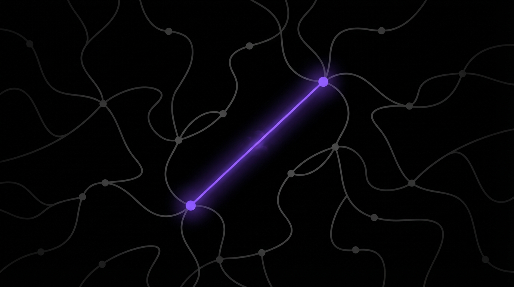

<!DOCTYPE html>
<html lang="en">
<head>
  <meta charset="UTF-8">
  <meta name="viewport" content="width=device-width, initial-scale=1.0">
  <title>The Blind Spot Effect</title>
  <script src="https://cdn.tailwindcss.com"></script>
  <script src="https://unpkg.com/react@18/umd/react.production.min.js"></script>
  <script src="https://unpkg.com/react-dom@18/umd/react-dom.production.min.js"></script>
  <script src="https://unpkg.com/@babel/standalone/babel.min.js"></script>
  <script src="https://unpkg.com/framer-motion@10.16.4/dist/framer-motion.js"></script>
  <link href="https://fonts.googleapis.com/css2?family=Inter:wght@400;500;600;700;800&display=swap" rel="stylesheet">
  <script>
    tailwind.config = {
      theme: {
        extend: {
          colors: {
            accent: '#8b5cf6',
            'accent-light': '#c4b5fd',
            dark: '#0f0f0f',
          }
        }
      }
    }
  </script>
  <style>
    * { font-family: 'Inter', -apple-system, BlinkMacSystemFont, sans-serif; }
    body { background: #FFFFFF; color: #111827; }
    .lesson-container { max-width: 720px; margin: 0 auto; }
  </style>
</head>
<body>
  <div id="root"></div>

  <script type="text/babel">
    const { motion, useInView, AnimatePresence } = window.Motion;
    const { useState, useRef, useEffect } = React;

    const smoothEase = [0.25, 0.4, 0.25, 1];

    function FadeUp({ children, delay = 0, className = "" }) {
      const ref = useRef(null);
      const isInView = useInView(ref, { once: true, margin: "-50px" });
      return (
        <motion.div ref={ref} className={className}
          initial={{ opacity: 0, y: 30 }}
          animate={isInView ? { opacity: 1, y: 0 } : {}}
          transition={{ duration: 0.6, delay, ease: smoothEase }}>
          {children}
        </motion.div>
      );
    }

    // Interactive Eye with Blind Spot
    function BlindSpotEye() {
      const ref = useRef(null);
      const isInView = useInView(ref, { once: true });
      const [showBlindSpot, setShowBlindSpot] = useState(false);

      useEffect(() => {
        if (isInView) {
          setTimeout(() => setShowBlindSpot(true), 1000);
        }
      }, [isInView]);

      return (
        <div ref={ref} className="bg-dark rounded-2xl p-8 relative overflow-hidden">
          <motion.svg
            className="w-full h-64"
            viewBox="0 0 400 200"
            initial={{ opacity: 0 }}
            animate={isInView ? { opacity: 1 } : {}}
          >
            {/* Eye outline */}
            <ellipse cx="200" cy="100" rx="150" ry="80" fill="none" stroke="#374151" strokeWidth="3" />

            {/* Iris */}
            <circle cx="200" cy="100" r="50" fill="#1e3a5f" />

            {/* Pupil */}
            <motion.circle
              cx="200" cy="100" r="25"
              fill="#0a0a0a"
              animate={{ r: [25, 30, 25] }}
              transition={{ repeat: Infinity, duration: 3 }}
            />

            {/* Highlight */}
            <circle cx="185" cy="85" r="10" fill="white" fillOpacity="0.3" />

            {/* Blind Spot - X mark */}
            <AnimatePresence>
              {showBlindSpot && (
                <motion.g
                  initial={{ opacity: 0, scale: 0 }}
                  animate={{ opacity: 1, scale: 1 }}
                  transition={{ type: "spring", duration: 0.5 }}
                >
                  <circle cx="320" cy="100" r="20" fill="#8b5cf6" fillOpacity="0.3" />
                  <line x1="310" y1="90" x2="330" y2="110" stroke="#8b5cf6" strokeWidth="4" />
                  <line x1="330" y1="90" x2="310" y2="110" stroke="#8b5cf6" strokeWidth="4" />
                </motion.g>
              )}
            </AnimatePresence>

            {/* Labels */}
            <text x="200" y="180" textAnchor="middle" fill="#9ca3af" fontSize="12">The Eye</text>
            {showBlindSpot && (
              <motion.text
                x="320" y="140"
                textAnchor="middle"
                fill="#8b5cf6"
                fontSize="11"
                fontWeight="bold"
                initial={{ opacity: 0 }}
                animate={{ opacity: 1 }}
              >
                Blind Spot
              </motion.text>
            )}
          </motion.svg>

          <motion.p
            className="text-center text-neutral-400 text-sm mt-4"
            initial={{ opacity: 0 }}
            animate={showBlindSpot ? { opacity: 1 } : {}}
            transition={{ delay: 0.5 }}
          >
            The brain fills in what it cannot see — automatically, invisibly.
          </motion.p>
        </div>
      );
    }

    // Cognitive Bias Cards
    function CognitiveBiasCards() {
      const ref = useRef(null);
      const isInView = useInView(ref, { once: true });
      const [activeBias, setActiveBias] = useState(null);

      const biases = [
        {
          name: 'Halo Effect',
          icon: '✨',
          desc: 'First impressions color everything. One good trait makes people assume all traits are good.',
          example: 'Apple products look premium, so people assume the technology inside is premium too.'
        },
        {
          name: 'Anchoring',
          icon: '⚓',
          desc: 'The first number you see becomes the reference point for all future judgments.',
          example: 'Show a $1,000 price first, and $497 feels like a steal.'
        },
        {
          name: 'Loss Aversion',
          icon: '😱',
          desc: 'People feel losses 2x more intensely than equivalent gains. FOMO is real neuroscience.',
          example: '"Don\'t miss out" works because missing out hurts more than getting something feels good.'
        },
        {
          name: 'Bandwagon',
          icon: '👥',
          desc: 'We do what others do. Social proof isn\'t just nice — it\'s neurologically irresistible.',
          example: '"10,000+ customers" triggers automatic trust because the crowd can\'t be wrong.'
        },
      ];

      return (
        <div ref={ref} className="space-y-3">
          {biases.map((bias, i) => (
            <motion.div
              key={i}
              className={`bg-neutral-50 rounded-xl overflow-hidden cursor-pointer transition-all ${activeBias === i ? 'ring-2 ring-accent' : ''}`}
              onClick={() => setActiveBias(activeBias === i ? null : i)}
              initial={{ opacity: 0, y: 20 }}
              animate={isInView ? { opacity: 1, y: 0 } : {}}
              transition={{ delay: i * 0.1 }}
              whileHover={{ scale: 1.01 }}
            >
              <div className="p-4">
                <div className="flex items-center gap-3">
                  <span className="text-2xl">{bias.icon}</span>
                  <div className="flex-1">
                    <div className="font-bold text-neutral-900">{bias.name}</div>
                    <div className="text-sm text-neutral-500">{bias.desc}</div>
                  </div>
                  <motion.span
                    className="text-accent"
                    animate={{ rotate: activeBias === i ? 180 : 0 }}
                  >
                    ↓
                  </motion.span>
                </div>
              </div>
              <AnimatePresence>
                {activeBias === i && (
                  <motion.div
                    className="bg-accent/5 p-4 border-t border-accent/10"
                    initial={{ height: 0, opacity: 0 }}
                    animate={{ height: 'auto', opacity: 1 }}
                    exit={{ height: 0, opacity: 0 }}
                  >
                    <p className="text-sm text-neutral-600">
                      <span className="font-semibold text-accent">In Action:</span> {bias.example}
                    </p>
                  </motion.div>
                )}
              </AnimatePresence>
            </motion.div>
          ))}
        </div>
      );
    }

    // The Invisible Influence Diagram
    function InvisibleInfluence() {
      const ref = useRef(null);
      const isInView = useInView(ref, { once: true });

      return (
        <div ref={ref} className="bg-dark rounded-2xl p-8">
          <motion.svg
            className="w-full h-48"
            viewBox="0 0 400 150"
            initial={{ opacity: 0 }}
            animate={isInView ? { opacity: 1 } : {}}
          >
            {/* Message arrow */}
            <motion.line
              x1="50" y1="75" x2="350" y2="75"
              stroke="#8b5cf6"
              strokeWidth="3"
              initial={{ pathLength: 0 }}
              animate={isInView ? { pathLength: 1 } : {}}
              transition={{ duration: 1 }}
            />
            <motion.polygon
              points="350,75 335,65 335,85"
              fill="#8b5cf6"
              initial={{ opacity: 0 }}
              animate={isInView ? { opacity: 1 } : {}}
              transition={{ delay: 1 }}
            />

            {/* Conscious layer */}
            <motion.rect
              x="100" y="20" width="200" height="30"
              fill="none"
              stroke="#6b7280"
              strokeWidth="1"
              strokeDasharray="5,5"
              initial={{ opacity: 0 }}
              animate={isInView ? { opacity: 1 } : {}}
              transition={{ delay: 0.5 }}
            />
            <text x="200" y="40" textAnchor="middle" fill="#6b7280" fontSize="10">CONSCIOUS MIND</text>

            {/* Subconscious layer */}
            <motion.rect
              x="100" y="100" width="200" height="40"
              fill="#8b5cf6"
              fillOpacity="0.2"
              initial={{ opacity: 0 }}
              animate={isInView ? { opacity: 1 } : {}}
              transition={{ delay: 0.7 }}
            />
            <text x="200" y="125" textAnchor="middle" fill="#8b5cf6" fontSize="11" fontWeight="bold">SUBCONSCIOUS</text>

            {/* Influence particles */}
            {[0, 1, 2, 3, 4].map((i) => (
              <motion.circle
                key={i}
                cx={100 + i * 50}
                cy={75}
                r="4"
                fill="#8b5cf6"
                initial={{ cy: 75, opacity: 0 }}
                animate={isInView ? { cy: 115, opacity: [0, 1, 1, 0] } : {}}
                transition={{ delay: 1.2 + i * 0.2, duration: 1 }}
              />
            ))}

            {/* Labels */}
            <text x="50" y="60" fill="#9ca3af" fontSize="10">Your</text>
            <text x="50" y="72" fill="#9ca3af" fontSize="10">Message</text>
            <text x="350" y="60" fill="#22c55e" fontSize="10">Action</text>
          </motion.svg>

          <p className="text-center text-neutral-400 text-sm mt-4">
            Your message bypasses conscious analysis and lands directly in the decision-making center.
          </p>
        </div>
      );
    }

    // The Key Reframe
    function KeyReframe() {
      const ref = useRef(null);
      const isInView = useInView(ref, { once: true });

      return (
        <div ref={ref} className="grid md:grid-cols-2 gap-4">
          <motion.div
            className="bg-red-50 border border-red-200 rounded-xl p-6"
            initial={{ opacity: 0, x: -20 }}
            animate={isInView ? { opacity: 1, x: 0 } : {}}
          >
            <div className="text-xs uppercase tracking-widest text-red-400 mb-3">Not This</div>
            <p className="text-neutral-700 font-medium">"I'm manipulating people's psychology against them"</p>
            <div className="mt-4 text-4xl opacity-30">❌</div>
          </motion.div>

          <motion.div
            className="bg-accent/5 border border-accent/30 rounded-xl p-6"
            initial={{ opacity: 0, x: 20 }}
            animate={isInView ? { opacity: 1, x: 0 } : {}}
            transition={{ delay: 0.2 }}
          >
            <div className="text-xs uppercase tracking-widest text-accent mb-3">Think This</div>
            <p className="text-neutral-700 font-medium">"I'm communicating in the language the brain actually understands"</p>
            <div className="mt-4 text-4xl opacity-30">✓</div>
          </motion.div>
        </div>
      );
    }

    // Adam Erhart Quote Visualization
    function PowerfulQuote() {
      const ref = useRef(null);
      const isInView = useInView(ref, { once: true });

      return (
        <div ref={ref} className="relative">
          <div className="absolute inset-0 bg-gradient-to-r from-accent/20 via-transparent to-accent/20 rounded-2xl blur-xl" />
          <motion.div
            className="relative bg-dark rounded-2xl p-8 text-center"
            initial={{ opacity: 0, scale: 0.95 }}
            animate={isInView ? { opacity: 1, scale: 1 } : {}}
          >
            <div className="text-6xl mb-4 opacity-20">"</div>
            <p className="text-xl text-white font-medium mb-4">
              These principles are so powerful, they work even when you <span className="text-accent">know</span> someone is using them on you.
            </p>
            <p className="text-sm text-neutral-500">— Adam Erhart</p>
          </motion.div>
        </div>
      );
    }

    // The Science Stack
    function ScienceStack() {
      const ref = useRef(null);
      const isInView = useInView(ref, { once: true });

      const layers = [
        { label: 'Conscious Awareness', percent: 5, color: '#6b7280' },
        { label: 'Subconscious Processing', percent: 95, color: '#8b5cf6' },
      ];

      return (
        <div ref={ref} className="space-y-4">
          {layers.map((layer, i) => (
            <motion.div
              key={i}
              className="bg-neutral-50 rounded-xl p-4"
              initial={{ opacity: 0, x: -20 }}
              animate={isInView ? { opacity: 1, x: 0 } : {}}
              transition={{ delay: i * 0.2 }}
            >
              <div className="flex justify-between items-center mb-2">
                <span className="font-medium text-neutral-700">{layer.label}</span>
                <span className="text-2xl font-bold" style={{ color: layer.color }}>{layer.percent}%</span>
              </div>
              <div className="h-3 bg-neutral-200 rounded-full overflow-hidden">
                <motion.div
                  className="h-full rounded-full"
                  style={{ backgroundColor: layer.color }}
                  initial={{ width: 0 }}
                  animate={isInView ? { width: `${layer.percent}%` } : {}}
                  transition={{ delay: 0.5 + i * 0.2, duration: 1 }}
                />
              </div>
            </motion.div>
          ))}
          <p className="text-sm text-neutral-500 text-center mt-4">
            95% of decision-making happens below conscious awareness.
          </p>
        </div>
      );
    }

    function Lesson() {
      return (
        <div className="min-h-screen bg-white">
          {/* Header */}
          <header className="bg-dark text-white px-6 py-12">
            <div className="lesson-container">
              <FadeUp>
                <span className="inline-block px-3 py-1 bg-accent/20 text-accent text-xs font-semibold rounded-full mb-4">COGNITIVE PSYCHOLOGY</span>
                <h1 className="text-3xl md:text-4xl font-extrabold mb-3 leading-tight">
                  The Blind Spot Effect
                </h1>
                <p className="text-neutral-400 text-lg">Why the most powerful persuasion is the persuasion you never see coming.</p>
              </FadeUp>
            </div>
          </header>

          <main className="px-6 py-12">
            <div className="lesson-container space-y-16">

              {/* Hook */}
              <FadeUp>
                <p className="text-xl text-neutral-700 leading-relaxed">
                  Your brain has a blind spot. <strong>Literally.</strong>
                </p>
                <p className="text-lg text-neutral-500 mt-4">
                  There's a place in your eye where the optic nerve connects, and your brain simply fills in what it "thinks" should be there. You never notice it. It works automatically.
                </p>
                <p className="text-lg text-neutral-500 mt-4">
                  Your brain works the same way with decisions. There are shortcuts — cognitive biases — operating constantly, invisibly. And understanding them is the key to ethical, powerful persuasion.
                </p>
              </FadeUp>

              {/* Eye Visualization */}
              <FadeUp>
                <h2 className="text-2xl font-bold text-neutral-900 mb-4">The Physical Blind Spot</h2>
              </FadeUp>

              <FadeUp delay={0.1}>
                <BlindSpotEye />
              </FadeUp>

              {/* The Science */}
              <FadeUp>
                <h2 className="text-2xl font-bold text-neutral-900 mb-4">The Hidden Decision Engine</h2>
                <p className="text-neutral-600 mb-6">
                  Here's what neuroscience reveals: the vast majority of your brain's processing happens outside your awareness. You think you're making rational choices, but...
                </p>
              </FadeUp>

              <FadeUp delay={0.1}>
                <ScienceStack />
              </FadeUp>

              {/* Generated Image: Subconscious Iceberg */}
              <FadeUp delay={0.2}>
                <div className="rounded-2xl overflow-hidden">
                  
                </div>
              </FadeUp>

              {/* Cognitive Biases */}
              <FadeUp>
                <h2 className="text-2xl font-bold text-neutral-900 mb-4">The 4 Master Shortcuts</h2>
                <p className="text-neutral-600 mb-6">
                  These mental shortcuts evolved to help us make fast decisions. Today, they're the invisible levers of human behavior. Click each to see them in action.
                </p>
              </FadeUp>

              <FadeUp delay={0.1}>
                <CognitiveBiasCards />
              </FadeUp>

              {/* Generated Image: Cognitive Shortcuts */}
              <FadeUp delay={0.2}>
                <div className="rounded-2xl overflow-hidden">
                  
                </div>
              </FadeUp>

              {/* The Invisible Influence */}
              <FadeUp>
                <h2 className="text-2xl font-bold text-neutral-900 mb-4">Invisible Influence</h2>
                <p className="text-neutral-600 mb-6">
                  When you understand these biases, your message doesn't fight against the brain — it flows with it. The message lands in the decision-making center without resistance.
                </p>
              </FadeUp>

              <FadeUp delay={0.1}>
                <InvisibleInfluence />
              </FadeUp>

              {/* The Reframe */}
              <FadeUp>
                <h2 className="text-2xl font-bold text-neutral-900 mb-4">The Ethical Reframe</h2>
                <p className="text-neutral-600 mb-6">
                  Some people worry: "Isn't this manipulation?" Here's the paradigm shift that changes everything.
                </p>
              </FadeUp>

              <FadeUp delay={0.1}>
                <KeyReframe />
              </FadeUp>

              {/* Adam Erhart Quote */}
              <FadeUp delay={0.1}>
                <PowerfulQuote />
              </FadeUp>

              {/* Key Takeaways */}
              <FadeUp>
                <div className="bg-dark text-white rounded-2xl p-8">
                  <h3 className="text-sm uppercase tracking-widest text-neutral-500 mb-6">Key Takeaways</h3>
                  <ul className="space-y-4">
                    <li className="flex items-start gap-3">
                      <span className="text-accent text-lg font-bold">01</span>
                      <span>95% of decisions happen subconsciously — speak to that level</span>
                    </li>
                    <li className="flex items-start gap-3">
                      <span className="text-accent text-lg font-bold">02</span>
                      <span>Cognitive biases aren't bugs — they're features of the brain</span>
                    </li>
                    <li className="flex items-start gap-3">
                      <span className="text-accent text-lg font-bold">03</span>
                      <span>The best persuasion works WITH the brain, not against it</span>
                    </li>
                    <li className="flex items-start gap-3">
                      <span className="text-accent text-lg font-bold">04</span>
                      <span>These principles work even when people know you're using them</span>
                    </li>
                  </ul>
                </div>
              </FadeUp>

              {/* Final Note */}
              <FadeUp>
                <div className="bg-accent/5 border-l-4 border-accent rounded-r-xl p-6">
                  <p className="text-lg font-semibold text-neutral-900 mb-2">
                    The Final Message
                  </p>
                  <p className="text-neutral-700">
                    This isn't about manipulation. It's about <strong>communication</strong> — speaking in the language the human brain is wired to understand. When you do, your message doesn't feel like marketing. It feels like truth.
                  </p>
                </div>
              </FadeUp>

            </div>
          </main>

          {/* Footer */}
          <footer className="px-6 py-6 border-t border-neutral-100">
            <div className="lesson-container flex justify-between text-sm text-neutral-400">
              <span>Quantum Scale</span>
              <span>Copywriting Series</span>
            </div>
          </footer>
        </div>
      );
    }

    ReactDOM.render(<Lesson />, document.getElementById('root'));
  </script>
</body>
</html>
